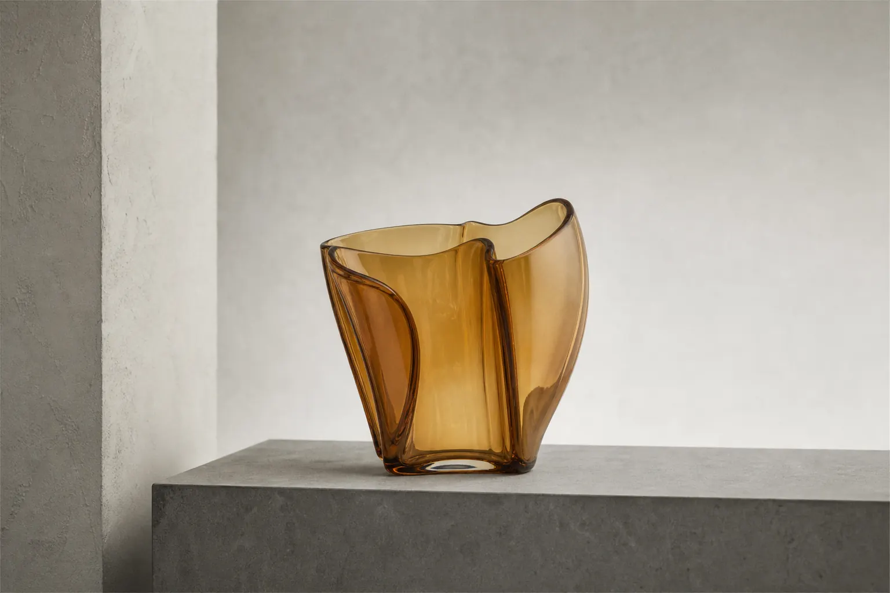
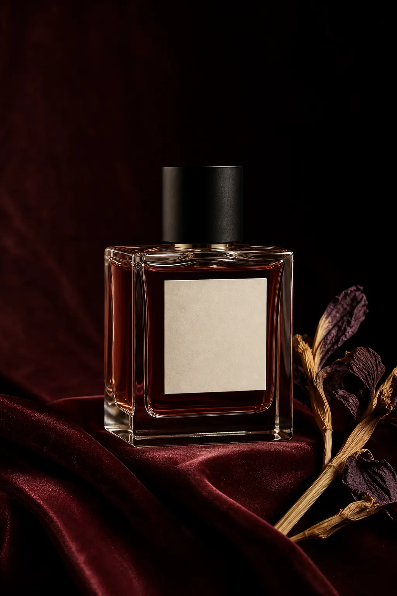
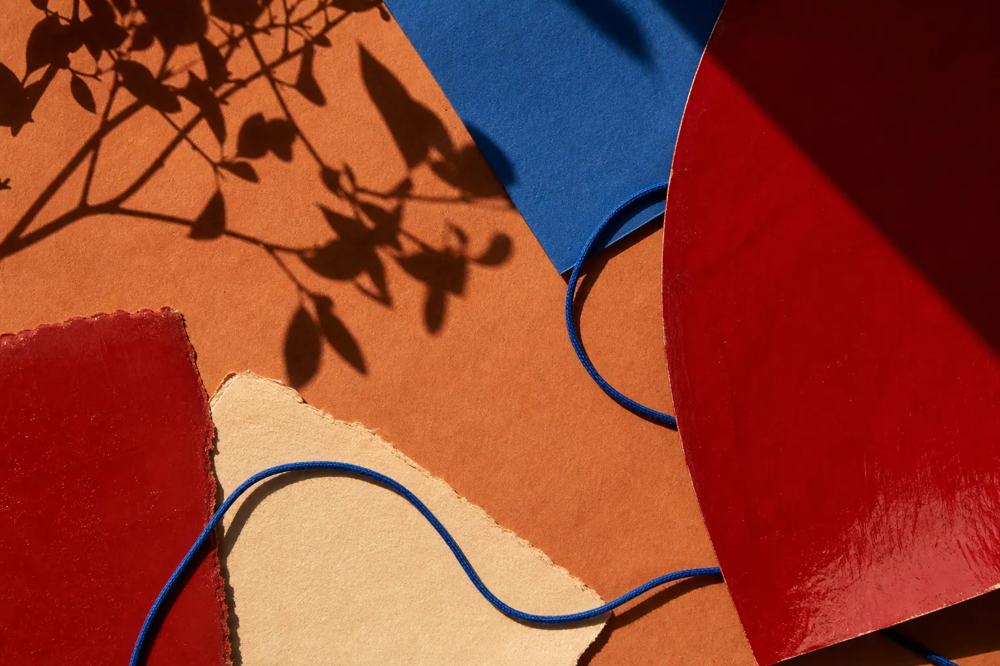

Buy with confidence
For considered products. The interface has to make value tangible, reduce selection uncertainty, and keep the route from discovery to bag clear.
Website UI Designer
Website directions, built around the decision that pays. I turn a first impression into a purchase, a qualified inquiry, or a reason to return.
View a sample UI auditThe commercial brief
Visual quality earns attention. The page hierarchy, proof, and conversion route decide what happens next. Each direction below is built around one clear business outcome before the visual system is designed.
(01) Commercial paths
These are not industry categories. They are the moments where a visitor either progresses, hesitates, or leaves.
For considered products. The interface has to make value tangible, reduce selection uncertainty, and keep the route from discovery to bag clear.
For premium services and complex offers. The website needs to build enough understanding and trust that the right prospect is ready to start a conversation.
For hospitality, memberships, and recurring services. The design connects programme, experience, and practical next steps so visitors have a reason to come back.
(01) Website directions
Each case is independent concept work. The interface, content hierarchy, and interaction model are designed to make a specific customer decision easier.
Objects and interiors
Win a higher-value inquiry with material proof, collection context, and a private appointment route.

Fragrance and ritual
Sell a considered product by making scent, concentration, and product selection easy to understand.

Hospitality and lifestyle
Build a reason to return by moving from programme discovery to booking and membership.

(02) Method
Identify what a visitor needs to understand, trust, and do before the next business action.
Put offer, proof, product or service detail, and the primary conversion route in a deliberate order.
Build the visual language and responsive components that carry the direction through the full website.
(03) Next step
Start with a sample UI audit to see the level of diagnosis and visual direction before discussing a redesign.